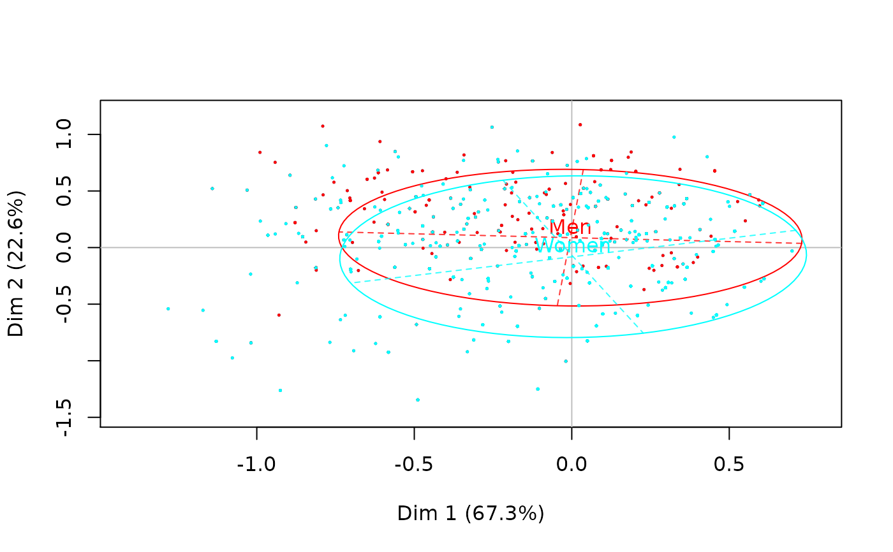
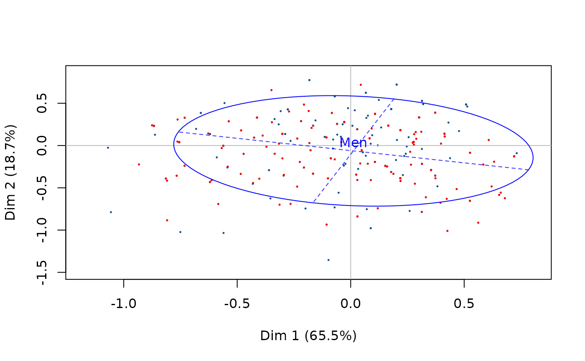

conc.ellipse.RdAdds concentration ellipses to the individuals factor map of a correspondence analysis.
conc.ellipse(resmca, var, sel = 1:length(levels(varb)), axes = c(1, 2), col = rainbow(length(sel)), pcol = rainbow(length(sel)), pcex = 0.2, lty = 1, lwd = 1, tcex = 1, text.lab = TRUE)
| resmca | object of class |
|---|---|
| var | supplementary variable to plot |
| sel | numeric vector of indexes of the categories to plot (by default, ellipses are plotted for every categories) |
| axes | length 2 vector specifying the components to plot (default is c(1,2)) |
| col | vector of colors for the ellipses of plotted categories (by default, rainbow palette is used) |
| pcol | vector of colors for the points at the center of ellipses of plotted categories (by default, rainbow palette is used) |
| pcex | numerical value giving the amount by which points at the center of ellipses should be magnified (default is 0.2) |
| lty | line type for ellipses (default is 1) |
| lwd | line width for the ellipses (default is 1) |
| tcex | numerical value giving the amount by which labels at the center of ellipses should be magnified (default is 0.2) |
| text.lab | whether the labels at the center of ellipses should be displayed (default is TRUE) |
This function has to be used after the cloud of individuals has been drawn.
Le Roux B. and Rouanet H., Multiple Correspondence Analysis, SAGE, Series: Quantitative Applications in the Social Sciences, Volume 163, CA:Thousand Oaks (2010).
Le Roux B. and Rouanet H., Geometric Data Analysis: From Correspondence Analysis to Stuctured Data Analysis, Kluwer Academic Publishers, Dordrecht (June 2004).
Nicolas Robette
## Performs specific MCA (excluding 'NA' categories) of 'Taste' example data set, ## plots the cloud of categories ## and adds concentration ellipses for gender variable data(Taste) mca <- speMCA(Taste[,1:11],excl=c(3,6,9,12,15,18,21,24,27,30,33)) plot(mca,type='i')conc.ellipse(mca,Taste$Gender)conc.ellipse(mca,Taste$Gender,sel=1,col='blue')